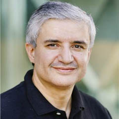
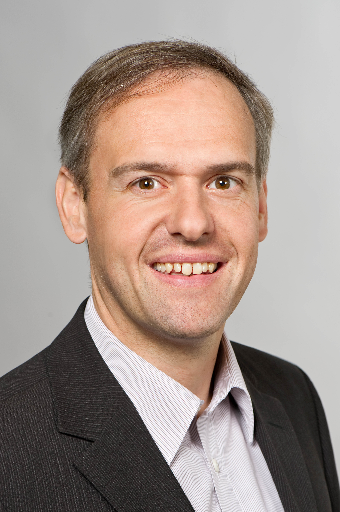

Tapping into the Full Potential of the Stratosphere
|
Abstract: High-Altitude Platform Stations (HAPS) are emerging as a key complement to LEO satellite mega-constellations, offering a scalable solution for global connectivity and bridging digital divides where terrestrial and satellite networks fall short. Operating from the stratosphere, HAPS leverage advanced beamforming and free-space optics (FSO) to deliver high-capacity and low-latency communications across diverse geographical areas. This talk explores the technological connectivity advancements driving HAPS by highlighting how intelligent beam management and optical feeder and inter-HAPS links can democratize broadband access and provide also unique solutions for disaster recovery, paving the way for a more connected world.
|

Professor Mohamed-Slim Alouini, IEEE Fellow
Distinguished Professor,
Electrical and Computer Engineering
King Abdullah University of Science and Technology (KAUST)
Saudi Arabia
|
Brief Bio: Mohamed-Slim Alouini, was born in Tunis, Tunisia. He earned his Ph.D. from the California Institute ofTechnology (Caltech) in 1998 before serving as a faculty member at the University of Minnesota and later at Texas A&M University at Qatar. In 2009, he became a founding faculty member at King Abdullah University of Science and Technology (KAUST), where he currently is the Al-Khawarizmi Distinguished Professor of Electrical and Computer Engineering and the holder of the UNESCO Chair on Education to Connect the Unconnected. Dr. Alouini is a Fellow of the IEEE, OPTICA, and SPIE, and his research interests encompass a wide array of research topics in wireless and satellite communications. He is currently particularly focusing on addressing the technical challenges associated with information and communication technologies (ICT) in underserved regions and is committed to bridging the digital divide by tackling issues related to the uneven distribution, access to, and utilization of ICT in rural, low-income, disaster-prone, and hard-to-reach areas.
|
Twin your Network to (Auto-)Manage Flexibility
|
Abstract: Autonomous network management is still the holy grail for the operation of future communication networks. In particular, almost unlimited flexibility promised by modern network systems is constantly challenged by highly varying demands of emerging applications. This poses a multitude of requirements to network operations and management to adapt network configuration to those demands. In this presentation, the challenges of operating flexible communication networks will be motivated by mobile network examples. Network digital twins are proposed as a solution concept towards autonomous network management. We show the role artificial intelligence and machine learning play for the creation and use of network digital twins and for future network management. We illustrate our findings with examples from software-defined networking and kubernetes platforms.
|

Prof. Dr.-Ing. Wolfgang Kellerer, IEEE Fellow
Chair of Communication Networks
Technical University of Munich (TUM)
Arcisstr. 21, 80333, München, Germany
|
Brief Bio: Wolfgang Kellerer (M'96, SM'11, F'25) is a Full Professor with the Technical University of Munich (TUM) in Germany, heading the Chair of Communication Networks. He received his Ph.D. degree in Electrical Engineering from the same university in 2002. He was a visiting researcher at the Information Systems Laboratory of Stanford University, CA, US, in 2001. Prior to joining TUM, Wolfgang Kellerer pursued an industrial career being for over ten years with NTT DOCOMO's European Research Laboratories. He was the director of the infrastructure research department, where he led various projects for wireless communication and mobile networking contributing to research and standardization of LTE-A and 5G technologies. In 2015, he has been awarded with an ERC Consolidator Grant from the European Commission for his research on flexibility in communication networks. He currently serves as an associate editor for IEEE Transactions on Network and Service Management and as the area editor for network virtualization for IEEE Communications Surveys and Tutorials. He is an IEEE Fellow.
|
Hosts
 |
Dr. Arijit Roy
Assistant Professor
Department of Computer Science and Engineering
Indian Institute of Technology Patna, India
Website: https://arijit-iitkgp.github.io
|
 |
Professor Sudip Misra, PhD, FACM, FIEEE, FAAIA, FNAE, FNASc, FIET (UK), FBCS (UK), FRSPH (UK), FIETE, FWAST
INAE Chair Professor & Former INAE Abdul Kalam Technology Innovation National Fellow
Alexander von Humboldt Fellow (Germany)
Department of Computer Science & Engineering
Indian Institute of Technology
Kharagpur-721302
West Bengal, India
Official Website: https://cse.iitkgp.ac.in/~smisra/
SWAN Group: https://cse.iitkgp.ac.in/~smisra/swan/
|
Webinar Registration
All participants need to pre-register by 5 PM (IST), May 15, 2025, by filling out the following form: Registration Link
Please note that you must have an account on this Webex site to register for the event.
When your registration is approved, you will receive an invitation to join the webinar. The registered participants must join using the email address provided in the registration form.
The Webinar flyer is available here.
|
|
|